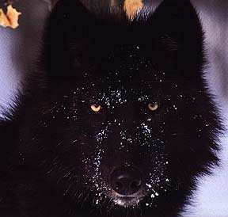

Forums galactiques > Taverne galactique : lieu de discussion informel > [HRP]Besoin d'aide!
Pages : 1
| Acanith Réputation à la taverne : 1200  27/08 ETU 10:59 | Score : 0 Détails Vraiment désolé à tous pour ce topic HRP, mais je rencontre un problème avec apo et vu que les admins ont été longs à répondre la dernière fois que je les ai contactés, je préfère faire appel à vous tous.
Je rencontre un bug avec apo: je n'ai pas reçu mes impôts d'hier soir et mes ordres ne se sont pas réalisés, alors que certains devraient l'être depuis plus de 12 heures. Je viens de rentrer du mode vacances, cela a peut être un lien. Enfin, je poste ceci parce que si quelqu'un connait une explication, voire la solution du problème, ça m'arrangerait beaucoup! ^^ Merci d'avance. PS: évidemment, on laisse couler le topic une fois le problème résolu. | ||
| sloopy Réputation à la taverne : 171  27/08 ETU 11:23 | Score : 0 Détails J'ai aussi ce probléme avec des ordres en cours! Il aurait dut ce finir tôt ce matin. Mais je n'ai pas mis le mode vacance. Donc ça ne doit pas avoir de lien et venir d'ailleur!
| ||
| Acanith Réputation à la taverne : 1200 27/08 ETU 11:29 | Score : 0 Détails Oui, apparemment c'est général. Snooper m'a dit qu'il avait posté sur l'externe, on attend la suite...
| ||
| Merkur Réputation à la taverne : 97  27/08 ETU 12:22  | Score : 0 Détails Je suis aussi touché par ce "bug".
Il y a fort à parier qu'il s'est répandu à toute la galaxie. Je suivrai les interventions du forum externe avec attention. | ||
| dark devil Réputation à la taverne : -8  27/08 ETU 13:27 | Score : 0 Détails Je suis aussi touché par ce " bug "
mes ordre aurai du se finir mais il sont encore dans la liste Date et heure de fin 26/08 ETU 20:12 27/08 ETU 10:44 | ||
| Cignia Réputation à la taverne : 125  27/08 ETU 14:07 | Score : 0 Détails Je m'ajoute a la liste.
Ainsi je constate que je ne suis pas la seule ateinte. J'espere que tout cela va se resoudre rapidement.Pour la suite on verra bien. | ||
| Meyen Réputation à la taverne : 515  27/08 ETU 14:11 | Score : 0 Détails Sachez chers collègue que le bug est pour tout le monde :)
Il a été signalé sur le forum externe hier : http://apocalypsis.celeonet.fr/forum/viewtopic.php?t=2429 | ||
| Gothic Réputation à la taverne : 0 27/08 ETU 19:58 | Score : 0 Détails moi je croit plutot que c'est quand la diplomacie est tombee que tout c'est arreter car quand j'ai ouvert mon compte rendu que tout c'est arreter et l'un de mes copain dis la meme chose
et je croit qu'il faut attendre qu'il y a une nouvelle diplomacie | ||
| Grodjirah Réputation à la taverne : 256  27/08 ETU 21:59 | Score : 2 Détails Ca sent l'apocalypse.
| ||
| loup noir Réputation à la taverne : 0  27/08 ETU 22:00 | Score : 1 Détails tu peux me dire pour quoi ca sent l'apocalypse
| ||
| loup noir Réputation à la taverne : 0 27/08 ETU 22:32 | Score : 0 Détails sa me rappele une ancienne emission
sa raconter que 11 planete viver en armoni apres une batail avec des robot puis les robot on reprit la revanche et a desactiver tout les defence et les vaisseaux et plus rien ne fonctionner sauf les ancienne arme peutetre qui vas se passer la meme chose ( c'est juste une sucjestion en passent) | ||
| Artimiandre Réputation à la taverne : 900  27/08 ETU 23:45 | Score : 5 Détails
HRP: Cher Loup, Je sais qu'on est en HRP, mais je tiens à vous féliciter pour votre inventivité en matière d'orthographe ^^ J'ai particulièrement apprécié : "sucjestion". Mais c'est un plaisir personnel... | ||
| Meyen Réputation à la taverne : 515 28/08 ETU 00:27 | Score : 0 Détails tu peux me dire pour quoi ca sent l'apocalypse
Parce que tu viens d'arriver.. | ||
| Acanith Réputation à la taverne : 1200 28/08 ETU 00:32 | Score : 0 Détails ... pour bientôt repartir ^^
Au fait, pendant qu'on est là... il faudrait définir un contexte RP commun pour nos débuts dans la gamma. Je veux dire par là que nous devrions nous accorder sur la nature des perturbations engendrées par la vague magnétique, afin de nos RPs dans la Gamma (en particulier ceux qui raconteront le rétablissement de nos communications) jouissent d'une certaine cohérence. Perso je propose que nous perdions le contact avec nos colonies et que la vague magnétique modifie l'espace temps en entraînant une nouvelle répartition des planètes: nos planètes changeraient de position, déplacées par la vague; Ca permettrait à ceux qui le souhaitent de conserver leur planète natale sans trop bousiller leur RP. On doit aussi décider combien de temps s'écoule entre la beta3 et la gamma (toujours RPment parlant). Quelqu'un a une proposition? | ||
| Grodjirah Réputation à la taverne : 256 28/08 ETU 01:09 | Score : 0 Détails Site de la version prochaine en phase tests, celui la qui se fige.... peut etre pour faire place au suivant.
| ||
| Larry Winthorpe Réputation à la taverne : 2277  28/08 ETU 08:27 | Score : 6 Détails HRP// STOP !
On arrête ! Merci ! On relance pas le débat vers le RP pré-reboot, on développe pas : on arrête le HRP. L'adresse de la page de l'externe traitant du problème a été donnée, venez rigoler là-bas avec nous, y a pas de raison, mais on laisse couler ce topic, et surtout on ne relance pas de HRP pour un autre débat. Le débat sur le RP et le reboot, il a aussi sa place sur l'externe : http://apocalypsis.celeonet.fr/forum/index.php Créons un sujet et parlons-en, pas de problème, mais la Taverne n'est pas un réservoir à merde HRP, restons dans l'esprit jusqu'au bout, par pitié. On laisse couler et on poursuit sur l'externe, d'ac' ? Et surtout, c'est pas la peine de me répondre, ok, ça fait partie du principe du "laissez couler", le dernier se prend un vent, ok, mais j'aime autant, merci. (Je dis ça, je prends toutes les précautions, mais à chaque fois y en a un pour répondre... Si ça arrive, les autres, laissez ce dernier répondant sans réponse, quoi qu'il dise, ne lui dites même pas "chut tais-toi, laisse couler", retenez-vous, pitié, et laissons couler le topic...)//HRP | ||
| loup noir Réputation à la taverne : 0 28/08 ETU 13:12 | Score : -7 Détails tout refonctionne maitenant
|
Pages : 1
Forums galactiques > Taverne galactique : lieu de discussion informel > [HRP]Besoin d'aide!